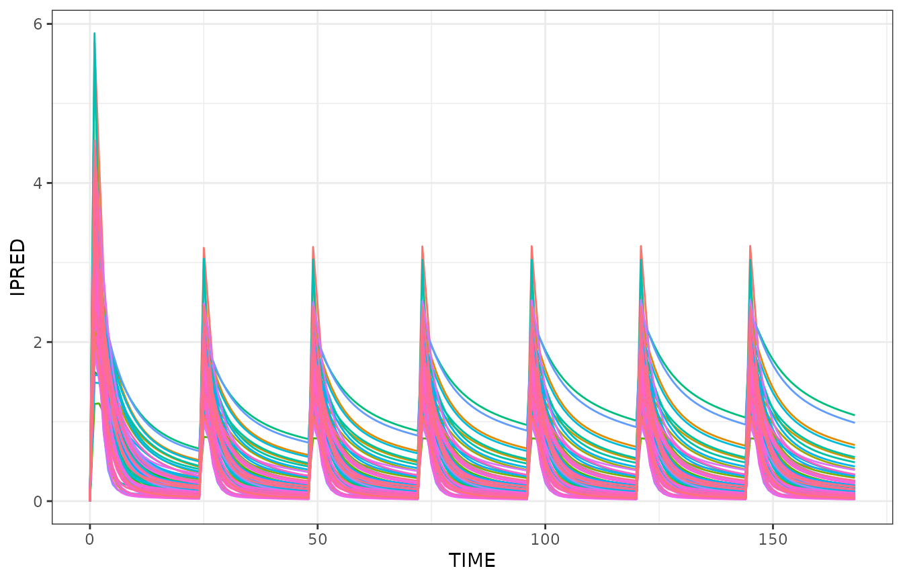
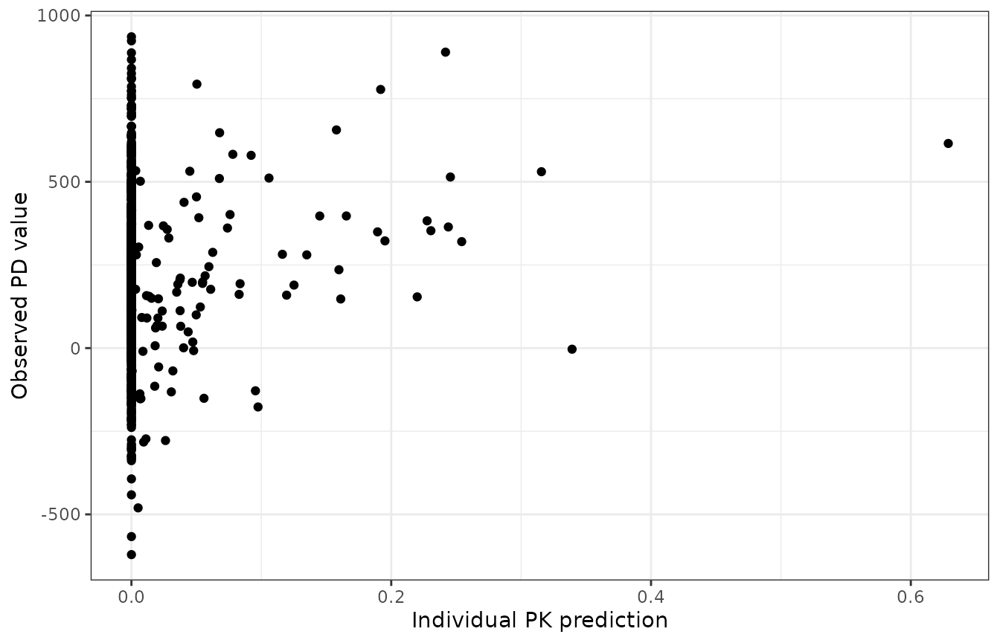

Simulate Known Subjects Using Emperical Bayes Estimates (Etas/Phis)
Source:vignettes/NMsim-known.Rmd
NMsim-known.RmdBuilt 2024-06-14 using NMsim 0.1.0.943.
Objectives
This vignettes aims at enabling you to use NMsim for the
following purposes
- Simualation of known subjects (estimated random effects),
Prerequisites
You should have configured NMsim with the path to the
Nonmem installation and maybe also PSN (optional). See NMsim-config.html.
Don’t worry - it is very easy.
You should be familiar with basic NMsim arguments as
described in NMsim-basics.html.
In that vignette you should have learned to use the default simulation
method. This vignette will be using the same model and simulation input
data to demonstrate how to use additional methods and features of
NMsim.
Simulation of known subjects
We sometimes want to simulate the already observed subjects. This
means we want to reuse the estimated random effects (ETA’s) given the
subject ID’s. NMsim has a method for this called
NMsim_known. The restriction is that all subjects (values
of ID) in the simulation input data must have been used in
the estimation input data.
Let’s think about that one more time before we go on. For
NMsim_known to work, ID values in the
simulation data set must be identical to ID values used in
the estimation. This is how NMsim_known will find the EBE’s
(ETAs) that define the subject. For models estimated with FOCEI,
NMsim_known will take the ETAs from the .phi
file produced by Nonmem. For SAEM/IMP-based estimation this file cannot
be used, and the user must have stored the ETAs in output table files
for the method to work. It does not matter where in the table files they
are, they just all need to be there. You can write all of them like it
is done in the example model provided with NMsim called
xgxr032.mod.
$TABLE ETAS(1:LAST) NOAPPEND NOPRINT FILE=xgxr032_etas.txtSo a “subject” essentially means a set of ETAs. Covariates must still
be provided in the input data set and can be modified if wanted. Notice,
NMsim_known does nothing to restore covariates - you must
define covariates in input data as needed.
Individual dosing history, sample times or both
Individual simulations are useful for several purposes. Examples
Reuse individual dosing history and use a new common sample scheme. This could be for homogeneous evaluation of exposure metrics such as Cmax, AUC, or just to show concentration-time profiles at identical sampling times based on a model estimated on data with heterogeneos sampling. Currently, there is no example of this in this vignette but see the other examples, and it should be pretty clear how to do this.
Reuse dosing history and use individual sampling scheme from a different data set, e.g. PD.
Simulate a new common dosing and sampling scheme to simulate already observed subjects on a new regimen. This is sometimes done if for one reason or the other the model is not considered reliable for simulation of new subjects but the individual parameter estimates are trusted.
Reuse a simulated population. One may prefer to reuse the same simulated subjects in multiple simulations for reproducibility and to have all difference between say simulation results of different regimens be driven by differences in the regimen, and not in the populations. This use of
NMsim_knownis on the todo list tog get it’s own vignette here.
Simulate known subjects on a new dosing regimen and new sample schedule
The following code takes an already created simulation data set with
a single ID, and merges all other columns than ID onto the
observed IDs. That gives the same simulation data for all
subjects.
First thing, we decide on a model (an input control stream of an estimated model) to use for the example:
file.mod <- system.file("examples/nonmem/xgxr021.mod",package="NMsim")Simulation with known ETA values is only possible through NMsim’s
internal Nonmem execution method. That means, we need to provide the
path to the Nonmem executable. Also, We configure locations where
NMsim will store and run Nonmem control streams
(dir.sims) and where it will save the final results file.
Finally, because this vignette uses some data.table code we
tell NMsim to return data.tables.
NMdataConf(path.nonmem="/opt/NONMEM/nm75/run/nmfe75",
dir.sims="simulate-tmp",
dir.res="simulate-results",
as.fun="data.table")
## read model results just to extract the observed ID's
res.mod <- NMscanData(file.mod,quiet=TRUE)
ids <- data.frame(ID=unique(res.mod$ID))
## Repeat the simulation data set for each ID and order accordingly
dat.sim.known <- merge(ids,
dat.sim[,setdiff(colnames(dat.sim),c("ID")),with=FALSE]
)
setorder(dat.sim.known,ID,TIME,EVID)
## check data
NMcheckData(dat.sim.known,type.data="sim")
simres.known <- NMsim(file.mod=file.mod,
data=dat.sim.known,
method.sim=NMsim_known,
table.vars="PRED IPRED CL V2 KA",
name.sim="known1"
)And the simulation results are plotted for each subject.
ggplot(as.data.table(simres.known)[EVID==2],aes(TIME,IPRED,colour=factor(ID)))+
geom_line()+
theme(legend.position="none")
Simulate individual dosing history at new individual sampling times for a PK/PD dataset
We want to plot some PD data angainst PK. However, PD was sampled differnetly than PK, and we want to evaluate the individual predictions of the PK model at the individual PD samplng times - reusing the individual dosing history.
Reading some example PD data:
pd <- readRDS(system.file("examples/data/xgxr_pd.rds",package="NMsim"))
## some code below makes use of data.table features so we make it a data.table
setDT(pd)For a PK model without time-varying covariates, suggested steps to generate the data for the simulation are:
- Take dose records from PK model estimation input data
(
pkdos). Just keep necessary columns likeID,TIME,EVID,CMT,AMT,ADDL,II, and any necessary covariates - Take PD data observation records (
pdsamples). Just keepID,TIME, and setEVID=2. - Add a unique row identifier to
pdsamples(an integer row counter, likeROW=1:nrow(pdsamples)) - Stack (
rbindfor data.tables orbind_rowsin tidyverse)pkdosandpdsamplesto one data set (pdsim) - In
pdsim, setDV=NA - Sort
pdsimat least byID,TIMEandEVID. There could be more depending on trial design
In case of time-varying covariates, you can keep all data records
from the PK data (without DV), but change observation
records to simulation records (EVID=2 instead of
EVID=0).
## Take dose records from PK model estimation input data
pkres <- NMscanData(file.mod,quiet=TRUE)
pkdos <- pkres[EVID==1,.(ID, TIME, EVID, CMT, AMT)]
## Take PD data observation records (`pdsamples`)
pdsamples <- pd[EVID==0,.(ID,TIME,LIDV)]
## Stack `pkdos` and `pdsamples` to one data set (`pdsim`)
pdsim <- rbind(pkdos,pdsamples,fill=TRUE)
## Nonmem needs a DV column to run
pdsim[,DV:=NA]
## only include subjects that were included in the PK model
pdsim <- pdsim[ID%in%pkres$ID]
setorder(pdsim,ID,TIME,EVID)Then run NMsim like this. We are renaming the prediction
columns using Nonmem $TABLE statement not to confuse PK
predictions and PD predictions.
simres.pksim <- NMsim(file.mod,
data=pdsim,
name.sim="pkpd",
method.sim=NMsim_known,
table.vars="PKIPRED=IPRED PKPRED=PRED"
)
ggplot(simres.pksim[!is.na(LIDV)&!is.na(PKIPRED)],aes(PKIPRED,LIDV))+
geom_point()+
labs(x="Individual PK prediction",y="Observed PD value")